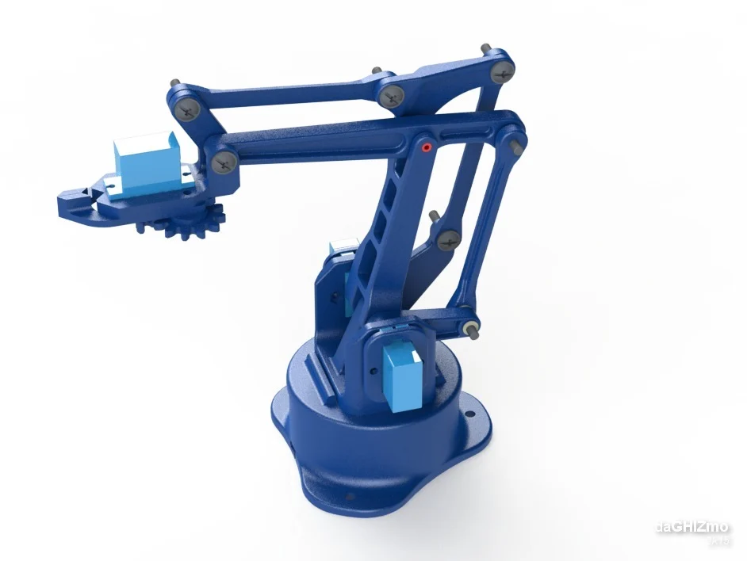

Bienvenido
Proyecto TeleRobot
Nos complace darle la bienvenida a nuestra página web, diseñada con el objetivo primordial de presentar nuestro proyecto: TeleRobot. Este proyecto surge como respuesta a la necesidad de abordar los desafíos ambientales que enfrenta nuestro planeta en la actualidad, particularmente en lo que respecta a la contaminación.
Creemos firmemente en el poder de la tecnología para ofrecer soluciones innovadoras y efectivas. TeleRobot representa nuestro compromiso con el desarrollo de soluciones tecnológicas que aborden de manera integral el problema de la contaminación.
Estamos convencidos de que el manejo adecuado de los residuos es fundamental para lograr este objetivo, y es por eso que hemos centrado nuestros esfuerzos en desarrollar soluciones que permitan una gestión más eficiente y responsable de los mismos.
A través de esta plataforma, nos esforzamos por proporcionar información apropiada sobre nuestro proyecto.
Únase a nosotros en este emocionante viaje hacia un futuro más limpio y sostenible. Juntos, podemos marcar la diferencia y dejar un legado positivo para las generaciones venideras.
información del modelo 3D del brazo aquí